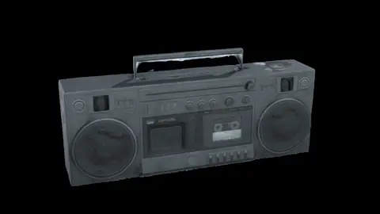
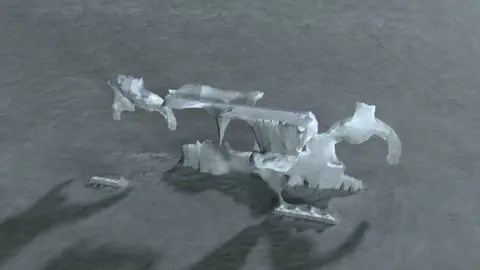
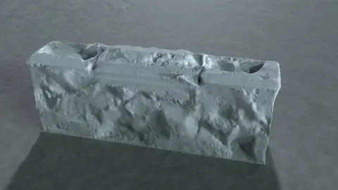
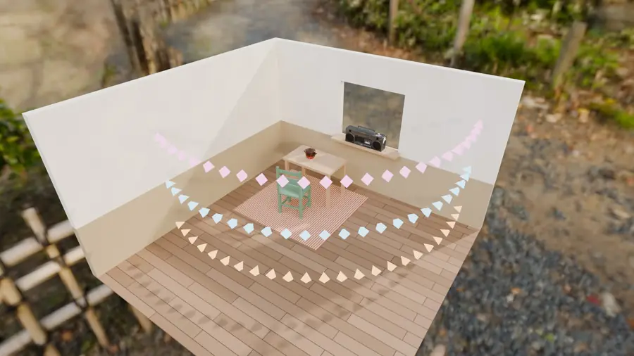
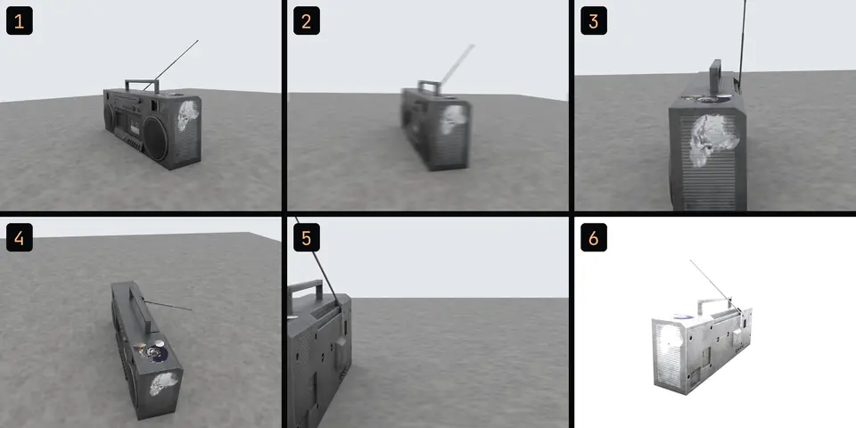
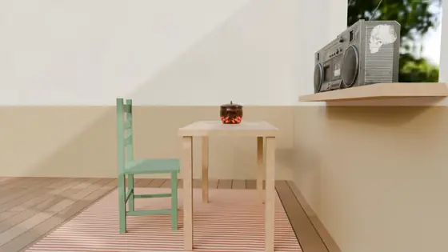
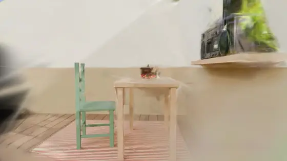

Open this on your phone while you shoot. Pick what you're capturing: an object for
photogrammetry in Week 4, or a place for a splat in Week 8. Tick things off as you go;
your ticks stay on this phone.
0/0ticked
01Before you go
02Light
Overcast or shadeThe best studio you'll ever get
No flash
No hard sun, no moving shadowsShadows get baked into the result
Enough light for a sharp photoSteady hands; no motion blur
Clouds change the light between ringsLock the exposure; pick a day with even light
Short shutter, enough lightA blurred capture won't train sharp
03What scans, what won't
Works
Matte surfaces
Real textureStone, bark, wood, worn leather
StillNothing moves while you shoot
Leaves and hairBetter as splats than as meshes, if they hold still
Fails
ShinyReflections move with you
See-throughGlass, water
MovingPeople, leaves, cars: ghosts and blur
PlainNothing to match on a blank surface
ThinAntennas and wires vanish
MirrorsA different world from every angle: mush

As it is 64 of 64 photos

Chrome 42 of 64

Plain white 44 of 64
One boombox, photographed 64 times in exactly the same way. Only the textured one came back: chrome tore into shards, plain white became a lumpy slab.
04How to move
Three loops, then the details. Our boombox: 24 + 24 + 16 = 64 photos, with a ruler in the frame.Two or three rings at different heights: knee, chest and head, each looking into the place.
Full loops at three heights: low, middle, high
At most 30° between photos20 to 30° is safe: 12 to 18 photos a loop
About 70 % overlap, photo to photoEvery point in at least two photos, better three
The whole object in every frame
Then close-ups of the details
Two or three rings, at different heightsA big place may need more: up to five
30 to 50 % overlap, picture to pictureA third to a half shared with the one before
Walk slowly, at the same distance
Divide a big place into parts
Each scan under three minutesScaniverse warns you past that
Step, don't turnMove the camera; never pan, tilt or roll on the spot
Seen from above. Turning on the spot gives a panorama: no parallax, no depth. Every step gives each point a new angle.

The Week 8 kitchen corner: 72 positions on three rings, at 0.5, 1.2 and 1.9 m.
05Count and check
50–100photos for one object
3loops: low, middle, high
2–3rings at different heights
3 minat most, for one scan
Before you leave, scroll through every photo.
While it processes, check your pictures. Then orbit the splat on the phone.

Keep 1 and 4. Delete 2: shaken. 3: zoomed in. 5: cut off. 6: overexposed.

Three rings, 72 pictures

One ring, 24 pictures
The same view, never photographed. With one ring the boombox and window smear, and a dark floater hangs in the air.
06After capture
RealityScanDefault
Windows · NVIDIA or recent AMD card
Free for students; free Epic account, through the Epic Games Launcher
Without a supported card it can only align, not build a mesh
Simplify to a few hundred thousand triangles, then texture again: a simplified model loses its texture
No spaces or umlauts in file names, or it refuses to export